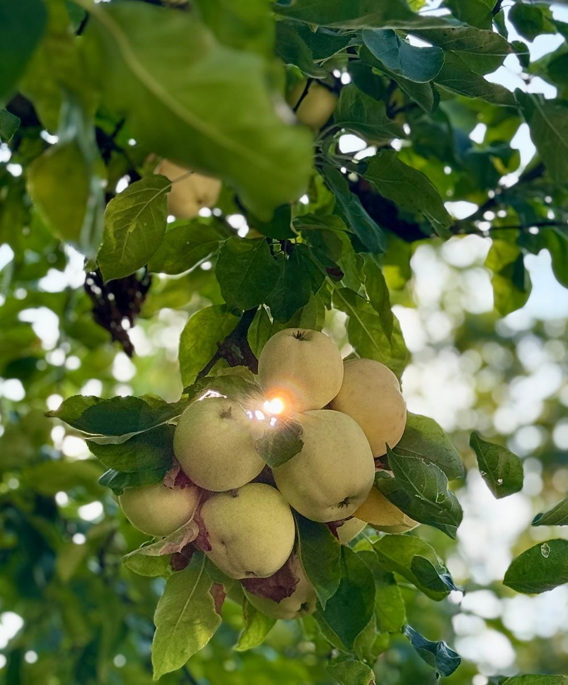
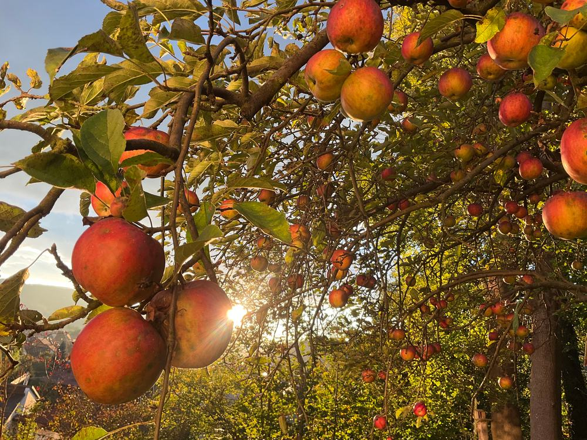
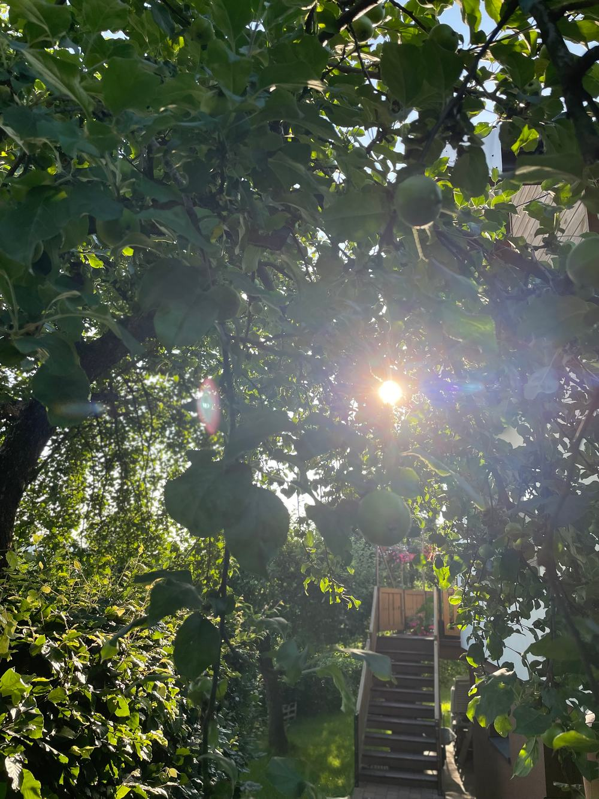
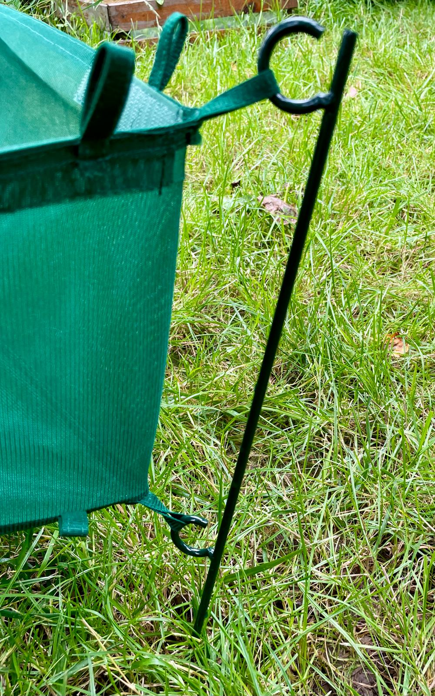

Baśń, do której się wchodzi
Naturalne soki z Makowskiego Sadu
Odkryj wyjątkowe walory tłoczonych soków jabłkowych z ekologicznego sadu w Małopolsce.
Przewiń i wejdź do saduZa siedmioma górami, za siedmioma lasami… a dokładnie w Makowie Podhalańskim.
Prolog
Dom w sadzie
Tradycja i pasja
Jesteśmy niewielkim, rodzinnym przedsięwzięciem z urokliwego Makowa Podhalańskiego. Zajmujemy się tworzeniem naturalnych soków jabłkowych, z pasją oraz troską o środowisko.


Rozdział pierwszy
Kwiat
Gdy sad budzi się w bieli i różu

Nasze kilkudziesięcioletnie jabłonie rosną w naturalny sposób bez przyspieszaczy wzrostu i są organicznie odporne.
Mieszkając pośród drzew, nie chcemy obcować ze środkami chemicznymi służącymi do usprawniania uprawy – stosujemy permakulturę.
Jabłonie przycinamy jesienią, usuwamy pasożyty, wszystko ręcznie.


Rozdział drugi
Jabłko
Każdy ma tu swoją rolę
Nasz sad to mikroekosystem, gdzie każde drzewo i owad ma swoją rolę. Nie chcemy tego zaburzać, stosując „chemię”.
-

Zawiązek -

Zielone jabłko w smugach słońca -

Kiść pod słońce -

Czerwone jabłka pod słońce -

Jabłko w dłoni


Dbamy o różnorodność sadu, tworząc środowisko, w którym różni goście są mile widziani.
Mile widziani goście
-

Jaszczurka wśród liści -

Pisklęta w gnieździe z traw -

Pisklę muchołówki szarej


Nie stosujemy oprysków, środków ochronnych ani sztucznych nawozów.


Rozdział trzeci
Zbiór
Tylko najlepsze
Starannie zbieramy i selekcjonujemy jabłka, tylko najlepsze trafiają do naszych soków.
-

Prosto z drzewa -

Siatki pod jabłoniami -

Jabłka na siatce -

Jesienna jabłoń -

Skrzynki pełne jabłek -

Pojemnik na jabłka


Rozdział czwarty
Transport
Droga do Choczni
Wyselekcjonowane jabłka transportujemy do „Tłoczni Choczni” pod Wadowicami.

Współpracujemy z lokalnymi biznesami
-

Stadnina koni
Nadmiarowe jabłka zawozimy dla koników pana Andrzeja.
-
Leśnicy i myśliwi
Nasze jabłka też idealnie nadają się do karmienia zwierząt leśnych. Dzikie zwierzątka zostają w lesie i nie wchodzą w szkodę :)

Pozostałe odpady oddajemy do lokalnego Punktu Selektywnej Zbiórki Odpadów Komunalnych.
Rozdział piąty
Tłoczenie
Tu dzieje się magia
„Tłocznia Chocznia” to profesjonalna tłocznia, wyposażona w nowoczesne urządzenia, które zapewniają precyzję, skuteczność procesu tłoczenia i dbałość o środowisko naturalne.
Cały proces jest zoptymalizowany przez tłocznię.

- 100% naturalne składniki
- Bez dodatku cukru i konserwantów
Rozdział szósty
Pakowanie
Sok zaklęty w kartonie

Soki jabłkowe
W pudełku lub same worki 3 l.
- Przydatność do spożycia przez co najmniej 5 dni po otwarciu
- Mniej materiałów na opakowanie
- Łatwe przechowywanie i nalewanie
Soki są dystrybuowane w workach PET z kranikiem.
Opcjonalnie soki są dodatkowo opakowane w prosty karton, umożliwiający łatwe nalewanie oraz zabezpieczający bukłak przed przypadkowym uszkodzeniem.


Etykiety robimy własnoręcznie, wycinając z kartonów po pizzy lub zużytych pudeł. Przywiązujemy je najprostszym sznurkiem.
Wszystkie napisy i logo są umieszczane poprzez ostemplowanie – w ten sposób nie tworzymy dodatkowych etykiet, nie używamy naklejek. W ten sposób kartony mogą być wielokrotnie używane – wystarczy uzupełniać „wkład”, do czego gorąco zachęcamy.


Rozdział siódmy
Sprzedaż
Gdy sad wychodzi do ludzi
Produkujemy rocznie około 300 litrów wysokiej jakości soków jabłkowych.


Morał Najlepsze soki powstają w harmonii z naturą.
Epilog